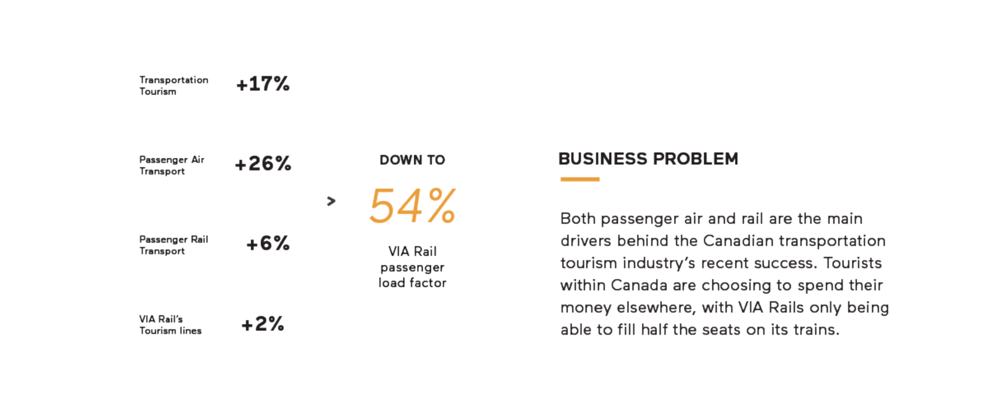
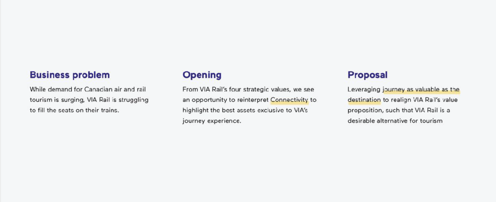
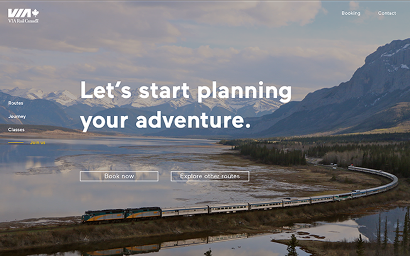
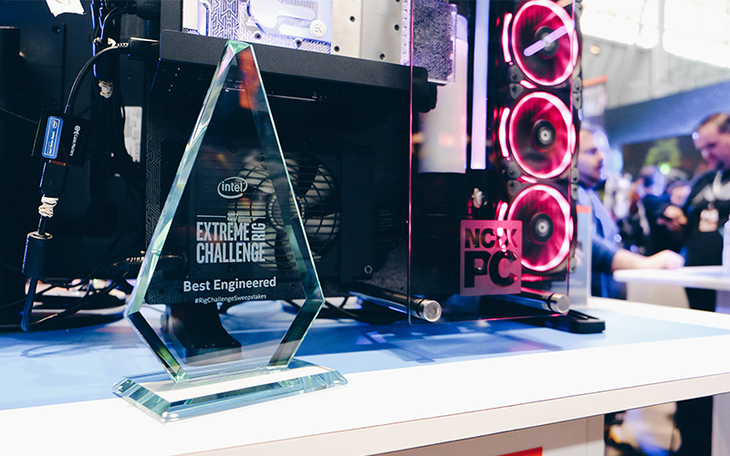
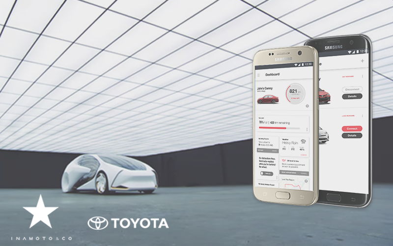
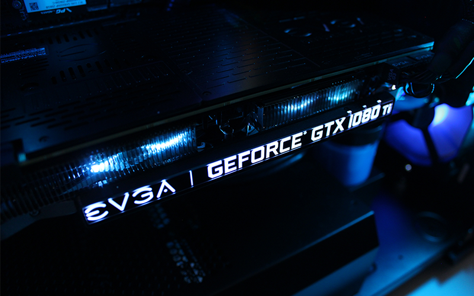

<!DOCTYPE html>
<html lang="en">
  <head>
    <meta charset="utf-8">
    <meta http-equiv="x-ua-compatible" content="ie=edge">
    <meta name="viewport" content="width=device-width, initial-scale=1.0">
    <link href="https://fonts.googleapis.com/css?family=Poppins" rel="stylesheet">
    <link rel="stylesheet" type="text/css" href="css/normalize.css">
    <link rel="stylesheet" href="css/zoom.css">
    <link rel="stylesheet" type="text/css" href="css/main.css">
    <title>JF - VIA Journey</title>
  </head>
</html>
<body>
  <header>
    <nav class="navbar"><a href="index.html" id="logo">joshua fan.</a><a class="toggle-button"></a>
      <ul class="navbar-links">
        <li><a class="hvr-underline-from-left " href="#">About</a></li>
        <li> <a class="hvr-underline-from-left " href="https://www.dropbox.com/s/aa68u3q7uf61x5o/josh_resume_02.pdf?dl=0">Resume</a></li>
        <li><a class="hvr-underline-from-left " href="https://www.linkedin.com/in/tjfan/">LinkedIn</a></li>
      </ul>
    </nav>
    <section class="videoBanner">
      <div class="videoWrapper">
        <iframe src="https://player.vimeo.com/video/242132143?title=0&amp;byline=0&amp;portrait=0" width="640" height="360" frameborder="0" webkitallowfullscreen="" mozallowfullscreen="" allowfullscreen=""></iframe>
      </div>
    </section>
  </header>
  <div class="content-wrapper">
    <section class="intro flex-content">
      <div class="left">
        <h1> VIA Journey - Product Proposal</h1>
        <p>As Canada’s only provider of coast-to-coast passenger rail service, VIA Rail is Canada’s equivalent of a national passenger train. VIA Rail’s primary revenue stream comes from its local commuter services, with its highly rated long-distance tourism trains struggling in sales.</p>
        <p>VIA Journey is our digital solution to VIA Rail’s declining ridership and brand misperception, inviting first-time potential passengers to reassess the value proposition VIA Rail offers. VIA Journey presents train travel as an alternative and enjoyable form of transportation tourism, aligning VIA Rail’s value proposition alongside consumers’ tangible, intangible, and aspirational values.</p>
        <p><strong> Role:  </strong>Writer, Business Analyst, UX &amp; Content Strategist</p>
        <p> <strong>Results:</strong></p>
        <ul>
          <li>identified and quantified VIA Rail's business problem through an analysis and consolidation of financial earnings reports and passenger statistics, placing their problem in economic context by researching other forms of tourism</li>
          <li>aligned business analysis with user experience principles, only targeting business problems addressable by design</li>
          <li>created initial set of wireframes that were eventually iterated to final product proposal</li>
          <li>produced/advised with significant amounts of written content, including but not limited to product copy, presentation scripts, video voiceovers, and preliminary reports to teaching staff</li>
        </ul>
      </div>
      <div class="right">
        <p> <strong>Team:  </strong><a href="http://sarahtong.ca/">Sarah Tong, </a><a href="http://nmichelle.com/">
            Michelle Ng,</a><a href="http://gabrielyeung.com/">
            Gabriel Yeung, </a><a href="http://grantzou.com/">Grant Zou</a></p>
        <p> <strong>Resources:</strong></p>
        <ul>
          <li> <a href="https://hbr.org/2015/06/a-better-way-to-map-brand-strategy">
               Brand Positioning Map (STP Marketing Process)</a></li>
          <li> <a href="http://www.experiencedesignthebook.com/the-book">
               Experience Design: A Framework of Integrating Brand</a></li>
          <li> <a href="http://www.gv.com/sprint/">
               Google Ventures Sprints</a></li>
          <li> <a href="http://www.managementstudyguide.com/maslows-hierarchy-needs-theory.htm">Maslow's Hierarchy of Needs</a></li>
          <li><a href="https://www.statcan.gc.ca/eng/start">Statistics Canada</a></li>
          <li><a href="http://www.viarail.ca/en/about-via-rail/governance-and-reports/annual-report">VIA Rail Annual Reports</a></li>
        </ul>
        <p> <strong>Timeline: </strong>5 weeks</p>
        <p> <strong>Deliverables:</strong></p>
        <ul>
          <li>Presentation</li>
          <li>Product Video </li>
        </ul>
      </div>
    </section>
  </div>
  <nav class="stickynav">
    <ul>
      <li><a href="#business">Business Context </a></li>
      <li><a href="#process">Process </a></li>
      <li><a href="#prototype">Prototype</a></li>
      <li><a href="#reflection">Reflection </a></li>
    </ul>
    <div class="content-toggle">
      <button class="filter-button hvr-shutter-out-horizontal" type="button" data-filter=".short">5min Read</button>
      <button class="filter-button hvr-shutter-out-horizontal" type="button" data-filter=".long">15min Read</button>
    </div>
  </nav>
  <div class="content-wrapper">
    <h2 class="section-heading">Business Context       </h2>
    <section id="business">
      <div class="problem short flex-content">
        <div class="full">
          <h3>Problem </h3>
          <p>While the Canadian tourism industry has been experiencing a growth in demand, VIA Rail is struggling and has lost $8 million in tourism. </p>
        </div>
        <div class="left"></div>
        <div class="right">
          <p>Our initial assumptions led us to incorrectly believe that VIA Rail was unappealing due to higher prices, longer travel times, and cramped spaces. It took extensive user research to correct this assumption. </p>
        </div>
      </div>
      <div class="problem long flex-content">
        <div class="full">
          <h3>Problem </h3>
          <p>In the last two years, the Canadian tourism industry has seen a surge in demand as an increasing number of Canadians choose to vacation domestically. This growth in the transportation tourism industry has largely been driven by passenger air and rail services, with rail competitors such as Rocky Mountaineer seeing double-digit growth. In spite of this, VIA Rail is struggling and has seen its tourism trains losing $8 million in 2016 alone.  </p>
        </div>
        <div class="left"></div>
        <div class="right">
          <p>Preliminary secondary research led us to our initial assumption; VIA Rail was an unappealing option for tourism due to painpoints surrounding higher upfront costs of travel, unpredictable and extended delays, and cramped living and leisure spaces. Our early brand positioning matrices seemed to verify this assumption, with VIA Rail being plotted against competitors across the tourism transportation industry. However, I decided to leverage VIA Rail’s recent Canada 150 campaign and brought in a number of our peers who had experienced VIA Rail firsthand.</p>
        </div>
      </div>
      <div class="brand short flex-content">
        <div class="full">
          <h3>Insights: User &amp; Brand Relationship </h3>
          <p>These user interviews helped place our secondary research in context, and revealed a number of insights that corrected our assumptions:</p>
          <ol>
            <li>Airlines aren't a direct competitor of VIA Rail, as VIA Rail offers more than just transportation </li>
            <li>VIA Rail's higher prices can be broken down as a hotel room, dining, and transportation. </li>
            <li>Previous painpoints we assumed existed were actually reported as insignificant</li>
            <li>VIA Rail's current website actually fails to distinguish its tourism products from its commuter products</li>
          </ol>
        </div>
        <div class="left"></div>
        <div class="right"></div>
      </div>
      <div class="brand long flex-content">
        <div class="full">
          <h3>Insights: User &amp; Brand Relationship </h3>
          <p>These user interviews helped place our secondary research in context, and revealed a number of insights that corrected our assumptions:</p>
          <ol>
            <li>Airlines are only a competitor when VIA Rail is perceived simply as a form of A-to-B transport; for a cheaper price and less travel times, airlines are the obvious choice of transport</li>
            <li>The higher cost of VIA Rail is much more reasonable when the packaged solution is broken down into a hotel, dining, and tourism travel experience</li>
            <li>The actual onboard touchpoints we thought of as painpoints (delays, cramped spaces) were actually quite enjoyable, with VIA Rail’s staff providing excellent hospitality throughout the trip; our interviewees felt that these were not significant painpoints</li>
            <li>VIA Rail’s existing website does little to differentiate its tourism products from its more mundane commuter services; the value proposition was unclear required significant cognitive overhead to explicate</li>
          </ol>
        </div>
        <div class="left"></div>
        <div class="right"></div>
      </div>
      <div class="opportunity flex-content">
        <div class="full">
          <h3>Opportunity</h3>
          <p>With these insights, we saw an opportunity for a design intervention that would address VIA Rail’s business problem. VIA Rail’s current website is ineffective at enticing consumers, and potential passengers weren’t discovering the value of their excellent onboard experience.</p>
          <p>With VIA Rail’s Destination 2025 vision, VIA Rail identified four key values to guide their organizational strategy. With Connectivity, VIA Rail seeks to “…create innovative solutions and ideas to connect our passengers, employees, and assets”. We’ve chosen to push this definition further, utilizing Connectivity as the journey being as valuable as the destination as an opportunity to realign their value proposition such that VIA Rail would be considered a desirable option for tourism.</p>
        </div>
      </div>
    </section>
    <h2 class="section-heading">Process       </h2>
    <section id="process">
      <div class="thinking short flex-content">
        <div class="full">
          <h3>Design Framework</h3>
        </div>
        <div class="left"></div>
        <div class="right"></div>
        <div class="full">
          <p>From a previous case study on the Starbucks Reserve, our team had created our own designers' framework with three key tenents; UX is Holistics, Focused, &amp; Adds Value. </p>
          <p>This framework allowed us to easily transition between macro and micro thinking, challenging our decisions while guiiding us forward. </p>
        </div>
      </div>
      <div class="thinking long flex-content">
        <div class="full">
          <h3>Design Framework</h3>
        </div>
        <div class="left"></div>
        <div class="right"></div>
        <div class="full">
          <p>After completing our case study on AKQA's collaboration with Starbucks Reserve, our team felt that we needed to establish an underlying design framework in order to ensure we had a good understanding of both the brand and any possible design interventions. Our three key user experience principles derived from that case study (UX is Holistic, UX is Focused, UX adds Value) spawned a design framework that allowed us to transition between macro and micro thinking, while simultaneously challenging us to quality check our decisions. Alongside our modified version of AKQA's Project Development Cycles, these were robust mental models that guided our strategies.</p>
        </div>
      </div>
      <div class="persona flex-content">
        <div class="full">
          <h3>Customer Segment &amp; Persona </h3>
        </div>
        <div class="left"></div>
        <div class="right"></div>
        <div class="full">
          <p>Our previous research and user interviews informed our decision to focus on first-time customers as our target audience. Our proposed VIA Journey would target adventurous individuals considering travel options through online research, who may know of VIA Rail only as a commuter train service. These individuals would be fairly flexible with their travel plans, and be open to sharing new experiences with strangers.</p>
        </div>
      </div>
      <div class="journey short flex-content">
        <div class="full">
          <h3>Customer Journey Framework</h3>
        </div>
        <div class="left"></div>
        <div class="right"></div>
        <div class="full">
          <p>By constructing a user journey framework that leverages Maslow's Hierarchy of Needs, we intended to present VIA Rail's value proposition by aligning tangible, intangible, and aspirational values alongside Maslow's needs as they progress through our journey framework. </p>
        </div>
      </div>
      <div class="journey long flex-content">
        <div class="full">
          <h3>Customer Journey Framework</h3>
        </div>
        <div class="left"></div>
        <div class="right"></div>
        <div class="full">
          <p>With our persona we constructed a user journey framework, and we recognized that VIA Rail was ineffective in converting consumers due to a misalignment, or gap, between the intended and perceived value proposition at the early entice stage. The previously mentioned painpoints around information being hidden in download-only PDFs, lack of distinction from commuter rail, and difficult to digest information meant that consumers never made it past the initial exploration of the site. This meant consumers weren’t buying, leading to a lack of ridership for VIA Rail.</p>
          <p>So we decided to intervene at the entice stage, breaking it down and drawing from Maslow's Hierarchy of Needs. We recognized that when basic needs are met, people are motivated to achieve higher level goals. Our second insight was to organize our value proposition so to present tangible, intangible, and aspirational values in alignment with Maslow's as they progress through the entice phase.</p>
        </div>
      </div>
      <div class="valueprop short flex-content">
        <div class="full">
          <h3>Value Proposition</h3>
          <p>VIA Journey presents each distinct tier of value as a promise from VIA Rail, realigning their value proposition in order to be considered as a desirable tourism option. </p>
        </div>
      </div>
      <div class="valueprop long flex-content">
        <div class="full">
          <h3>Value Proposition</h3>
          <p>While we understand that customers may not recognize each distinct tier of value, we wanted to increase the intended value proposition by highlighting the tangible, intangible, and aspirational values being promised. <strong>Our digital solution seeks to close this value gap, realigning their value proposition such that VIA Rail will be considered a desirable option for tourism.</strong></p>
        </div>
      </div>
      <div class="metaphor short flex-content">
        <div class="full">
          <h3>Metaphor &amp; Precedents</h3>
        </div>
        <div class="left"></div>
        <div class="right"></div>
        <div class="full">
          <p>During the lightning demos for the sprints, we felt that a train window was an excellent medium for showing &amp; not telling the value VIA Rail was offering.  My early sketches combined the mapping of the physical journey with scrolling digital interactions, iterating VIA Journey such that a peek at the tangible, intangible, and aspirational values promised by VIA Rail. </p>
        </div>
        <div class="left"></div>
        <div class="right"></div>
      </div>
      <div class="metaphor long flex-content">
        <div class="full">
          <h3>Metaphor &amp; Precedents </h3>
        </div>
        <div class="left"></div>
        <div class="right"></div>
        <div class="full">
          <p>During our sprints, we felt that using a transformational metaphor of looking out a train window was a powerful way of showing (not telling!) what VIA Rail was promising customers on their journey across Canada. Combined with the mapping of the physical journey with scrolling digital interactions, VIA Journey would represent a peek at the tangible, intangible, and aspirational values promised by VIA Rail. </p>
          <p>It was with this mindset that in the midst of our sprints, I sketched out what part of what would eventually be iterated and evolved into our final product proposal. However, without the contribution of my team, there was no way the crude sketches below would've evolved into VIA Journey.</p>
        </div>
        <div class="left"></div>
        <div class="right"></div>
      </div>
    </section>
    <h2 class="section-heading">Prototype       </h2>
    <section id="prototype">
      <div class="prototype flex-content">
        <div class="full">
          <h3>Landing Page </h3>
          <div class="videoWrapper">
            <iframe src="https://player.vimeo.com/video/252670321?title=0&amp;byline=0&amp;portrait=0" width="640" height="360" frameborder="0" webkitallowfullscreen="" mozallowfullscreen="" allowfullscreen=""></iframe>
          </div>
          <p>Potential passengers enter our solution through the navigation on VIA Rail’s main website. Then, an optional video of the onboard experience would lead to an overview of the six routes VIA Rail offers, presenting an immediate value proposition.</p>
          <p>An option to skip the video at the beginning is provided, considering that the revisiting users may want to land straight on the website. We present the six routes offers by listing them within the side navigation, so users can clearly pick their options. Once they choose their interested routes, user can look into details by clicking the explore button.</p>
        </div>
      </div>
      <div class="prototype flex-content">   
        <div class="full">
          <h3>Journey </h3>
          <div class="videoWrapper">
            <iframe src="https://player.vimeo.com/video/252670299?title=0&amp;byline=0&amp;portrait=0" width="640" height="360" frameborder="0" webkitallowfullscreen="" mozallowfullscreen="" allowfullscreen=""></iframe>
          </div>
          <p>Moving into a specific route from the homepage, potential passengers are presented with specific scenes from that journey. Each scene is revealed through the customer’s every scroll, breaking down and mapping the physical journey into a series of digital interactions.</p>
          <p>Combined with animations, our solution creates layers of information. Overall, this reduces the cognitive overhead by affording customers the ability to understand the journey at their own pace.</p>
          <p>The intended effect this has on VIA Rail’s perceived value is that the presented landscapes and cities become a tangible value; a promise of what customers will receive, with stories and images to reinforce that journey is the key value of the trip.</p>
        </div>
      </div>
      <div class="prototype flex-content">   
        <div class="full">
          <h3>Social Media </h3>
          <div class="videoWrapper">
            <iframe src="https://player.vimeo.com/video/252670269?title=0&amp;byline=0&amp;portrait=0" width="640" height="360" frameborder="0" webkitallowfullscreen="" mozallowfullscreen="" allowfullscreen=""></iframe>
          </div>
          <p>For each stop along the journey, consumers may notice a subtle pull-out indicator on the right side of the page. Selecting this triggers a playful animation, sliding out a curated series of Instagram photos posted at that stop.</p>
          <p>These posts provide credibility to VIA Rail; showing that other passengers have enjoyed VIA Rail’s journey-based experience. Using geo-hashtags to chunk this content further reduces cognitive effort while highlighting the intangible value promised: to show potential passengers what they might do on this journey. </p>
        </div>
      </div>
      <div class="prototype flex-content">   
        <div class="full">
          <h3>Class Offering </h3>
          <div class="videoWrapper">
            <iframe src="https://player.vimeo.com/video/252671116?title=0&amp;byline=0&amp;portrait=0" width="640" height="360" frameborder="0" webkitallowfullscreen="" mozallowfullscreen="" allowfullscreen=""></iframe>
          </div>
          <p>Scrolling down, the site cognitively front-loads our three class options. Hovering over each reveals an immediate tangible value, and clicking explore triggers more information to fill the frame, consistent with the thematic use of the long scroll and layered information.</p>
          <p>We recognize that we can’t design one set of higher values to appeal to all customers, and we leveraged their price points and distinct classes to better target different types of customers. Instead of trying to appeal to the cost-conscious consumer with the premium offerings, we guide customers down their corresponding classes, tailoring the activities and accommodations that best fulfills their intangible and aspirational needs.</p>
        </div>
      </div>
      <div class="prototype flex-content">   
        <div class="full">
          <h3>Package Summary </h3>
          <div class="videoWrapper">
            <iframe src="https://player.vimeo.com/video/252670288?title=0&amp;byline=0&amp;portrait=0" width="640" height="360" frameborder="0" webkitallowfullscreen="" mozallowfullscreen="" allowfullscreen=""></iframe>
          </div>
          <p>Finally, after exploring the breadth of information available for the selected route, we wanted to propose the next steps: options for the consumer to book a journey or explore other routes. The intention of this is to provide both a hard and soft commitment; consumers can choose to make the purchasing decision, or continue exploring.</p>
        </div>
      </div>
    </section>
    <h2 class="section-heading">Reflection       </h2>
    <section id="reflection">
      <div class="reflection flex-content">
        <div class="full">
          <h3>Thoughts </h3>
          <p>VIA Journey represented my first user experience project, and was where I was introduced to Sprints and the jungle of mental models present in Newbery &amp; Farnham's Experience Design book. The greatest surprise to me was how heavily involved business thinking and strategy was at the core of this project. I found myself comfortably explaining business decisions to my team members, switching back and forth between design and business contexts. </p>
        </div>
      </div>
      <div class="full">
        <h3>Impact </h3>
        <p>We believe that VIA Journey better entices potential passengers to consider VIA Rail as a viable option for transportation tourism, through addressing painpoints on the original site as well as realigning VIA Rail's perceived value proposition with their intended one. Looking forward, I'd want to address accessibility concerns as well as rethinking how VIA Journey would appear on different devices.  </p>
        <p>VIA Journey went on to being selected by Chelsea Garber from Inamoto &amp; Co. as one of the two winning projects of the term, with our team being selected for an opportunity to be mentored by Chelsea on a brief from Inamoto' &amp; Co's client Toyota. </p>
      </div>
    </section>
  </div>
  <section class="projects-filter">
    <h3 class="section-heading">More Projects</h3>
    <div class="button-container">
      <button class="filter-button hvr-underline-from-left" type="button" data-filter="all">All</button>
      <button class="filter-button hvr-underline-from-left" type="button" data-filter=".cat-ux">User Experience</button>
      <button class="filter-button hvr-underline-from-left" type="button" data-filter=".cat-mark">Marketing</button>
    </div>
  </section>
  <section class="projects">
    <div class="mix cat-ux projects-container"><a class="hvr-bob" href="via.html"></a>
      <h3>VIA Journey</h3>
      <p>A digital solution designed to address VIA Rail's declining ridership, VIA Journey realigns VIA Rail's brand proposition through the concept that a journey is as valuable as the destination. </p>
    </div>
    <div class="mix cat-mark projects-container"><a class="hvr-bob" href="intel.html"></a>
      <h3>Intel Extreme Rig Challenge 2017</h3>
      <p>Collaborated with Intel™ and other industry vendor/partners to prepare and execute an integrated product marketing strategy, concluding with an exhibit at PAX East, an 80 000 attendee convention. </p>
    </div>
    <div class="mix cat-ux projects-container"><a class="hvr-bob" href="toyota.html"></a>
      <h3>Toyota Guardian</h3>
      <p>A mobile application that leverages Toyota's existing products and brand equity to begin building trust and credibility in Toyota's future autonomous technologies.</p>
      <p>Mentored by Chelsea Garber from ★ Inamoto &amp; Co.</p>
    </div>
    <div class="mix cat-mark projects-container"><a class="hvr-bob" href="intel.html"></a>
      <h3>Market Research + Analysis</h3>
      <p>A North American-wide market research project, with competitor analysis and business recommendations that were a major contribution to a 30% annual sales growth.</p>
    </div>
    <section class="footer">
      <p>copyright Joshua Fan 2018<sup>©</sup></p>
      <p>portfolio handcrafted with the finest, free-trade organic code</p>
      <div class="footer-links"><a href="https://github.com/tcjoshuafan/P03---Portfolio">Github </a><a href="styleguide.html">Style Guide </a><a href="citations.html">Citations </a></div>
    </section>
  </section>
  <script src="js/jquery-3.3.1.js"></script>
  <script src="js/mixitup.min.js"></script>
  <script src="js/scrollspy.js"></script>
  <script src="js/stickynav.js"></script>
  <script src="js/mixit_trigger.js"></script>
  <script src="js/transition.js"></script>
  <script src="js/zoom.js"></script>
  <script src="js/main.js"></script>
</body>